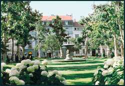
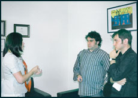

Interviu cu ambasadoarea României la Zagreb, Oana-Cristina Popa
- Ați fost numită în funcția de ambasador la Zagreb în anul 2005. De mai bine de zece ani, nici un reprezentant al Ambasadei române nu a pus piciorul prin satele istro-românilor din Croația. Dvs. știți ceva despre existenta lor?
- Da, sigur ca da. Mai sunt doar trei sau patru sate, unde astăzi sunt vreo 300 de locuitori, care mai vorbesc dialectul istro-român. Se declară istro-români, dar nu ca etnie, ci cultural. Ei sunt cetățeni croați, dar se declară, din punct de vedere al originii, istro-români.
- Lăsând la o parte faptul că nu sunt doar trei sate de istro-români, ci douăsprezece, dvs. ați fost vreodată acolo? V-ați interesat de problemele lor?
- Nu am fost niciodată. Dar intenționez să ma duc. M-a invitat prefectul regiunii să mergem împreună, să le facem o vizită istro-românilor.
- Din partea Ambasadei a ajuns cineva acolo?
- Au fost două colaboratoare ale Ambasadei. Am discutat posibilitatea de a face schimb cu niște copii care să meargă la studii în România, dar să vedem ce finanțări vom avea. Am trimis și niște materiale cu România, dar ei au cerut cărți românești, colecții de poezii. Noi, ca ambasada, nu avem așa ceva. Am solicitat la MAE (Ministerul Afacerilor Externe), dar nu am primit deocamdată nimic.
- Nu vi se pare formidabil ca niște oameni care nu au fost niciodată în România cer cărți și colecții de poezii?
- Ba da. Am solicitat anul trecut cărțile la București și nu am primit nimic.
- Istro-româna e trecută pe lista roșie a UNESCO, ca limbă aflată pe cale de dispariție. Nu e normal ca autoritățile românești să se implice în acest efort de salvare?
- Ba da, sigur. Dar noi ca ambasadă nu putem să le oferim mai mult decât sprijin moral.
- În ce constă el?
- Am sugerat MAE organizarea unor turnee cu ansamblurile folclorice de aici. A fost primul lucru pe care l-am propus când am ajuns la Zagreb. Din păcate, n-au existat reacții, deși eu am informat ministerul despre această "minoritate". Personal, tot ce mi-a stat în putere să fac am făcut. Le-am trimis istro-românilor materiale publicitare despre mânăstirile românești, albume cu Transilvania, iar când am avut promovarea intrării în UE, le-am mai trimis și alte broșuri. Asta a fost tot ce am putut face. Suntem o ambasadă mică, nu avem centru cultural aici, nici măcar atașat cultural nu avem. Postul există, dar e vacant.
- Istro-românii nu sunt o minoritate politică recunoscută, dar pot fi ajutați ca minoritate culturală. Importanța culturală a acestui grup etnic este enormă pentru România. E ridicol să-i tratați cu broșuri. De ce nu îi sprijiniți mai mult?
- Asta ar trebui să facă autoritățile române.
- Păi dvs. reprezentați autoritățile române!
- Da... Dar sprijinul ar trebui să îl primim de la București.
"Tratatul romano-croat e în lucru de patru ani"
 - Există un tratat bilateral româno-croat?
- Pe probleme de cultură nu există tratat româno-croat. E în lucru de patru ani.
- Atunci cum se face ca minoritatea croată din România are școli și grădinițe?
- Croații din România au reprezentant în parlament, sunt minoritate oficială, mai numeroasă... Au sprijin de la guvernul lor: președintele croat a fost la ei de două ori, și premierul o dată.
- Noi de ce nu facem același lucru pentru istro-români?
- Bună întrebare, dar eu nu pot să vă răspund. Se cunoaște bine la MAE această problemă. Eu nu am nici oameni, nici materiale suficiente ca să fac ceva. În mod oficial, nu cred însă că istro-românii pot fi organizați precum croații din Caraș-Severin.
- Autoritățile croate au declarat în mod repetat că sunt deschise la cooperare în privința istro-românilor, dar așteaptă inițiativa din partea oficialităților române. Ar putea exista tensiuni? Ați întâmpinat dificultăți în sensul acesta?
- Nu, nu există tensiuni. După cum v-am spus, eu am sesizat problema, dar de la Direcția Relații Culturale nu am avut nici un răspuns. Din exterior poate părea simplu, eu nu vreau să îi scuz, dar lucrurile sunt mult mai complicate din punct de vedere administrativ. Nu știu cum ar putea, până la urmă, statul roman să sprijine o minoritate nerecunoscută. E și o chestiune de procedură.
- Deci, ce să le spunem cititorilor noștri? Că unul dintre cele mai importante dialecte ale limbii române dispare sub privirile ațipite ale guvernului de la București? Ca de obicei, sistemul ticăloșit e de vină?
- Da, probabil e adevărat.
- Venim de la o conferință care s-a desfășurat la Trieste. Lingviști, cercetători și intelectuali din mai multe țări europene au discutat despre importanța dialectului istro-român. Toți considerau că e vorba despre un muzeu al limbii române. Din partea Ambasadei României la Zagreb nu a fost nimeni...
- Nu am știut despre această expoziție și despre conferință. Nu m-a informat nimeni.
- De Fundația "Decebal" ați auzit?
- Nu.
- Se află la Trieste. Se ocupă de șapte ani de istro-români. Expoziția lor despre istro-români este cea mai mare organizată până acum pe acest subiect. Au avut în prima zi peste 400 de vizitatori, și după trei zile, deja au primit invitații pentru noi expoziții, pe doi ani de-acum înainte. Dacă România va solicita această expoziție, o va avea, cel mai devreme, peste trei ani... Dacă va mai exista până atunci...
- Nu știu unde este această expoziție. Nu m-a informat nimeni. Nu a venit nimeni să îmi ceară sprijinul sau să mă întrebe ceva. Implicarea noastră nu a fost cerută de nimeni.
- Nici pe americani nu i-a anunțat nimeni, dar ei au investit deja 400 de mii de dolari în cercetarea istro-românilor.
"Sprijiniți-mă să fac ceva pentru istro-români, și fac"
 - Ansamblul de la Jeiăni l-ați văzut vreodată?
- Am auzit de el, dar nu l-am văzut.
- Au un palmares internațional impresionant. Sunt cel mai important grup folcloric din Croația și ei, peste tot, spun că sunt români.
- Se poate. Eu nu i-am văzut.
- În tratatul semnat de Iliescu și Kucima în 1994, există o specificație clară, de colaborare pe plan cultural și de învățământ. De ce nu se respectă?
- Sunt simple declarații politice. Ele trebuiau întărite prin acorduri bilaterale. Acord în domeniul învățământului există, dar în domeniul cultural nu există. Nu se pot finanța programe cu el.
- Aspectul politic nu ar trebui să impieteze asupra activităților dvs. Istro-românii ar trebui să fie o preocupare majoră, sunt un fragment de istorie românească. Un tezaur.
- Aveți dreptate, sunt un tezaur, dar eu nu pot să fac nimic pentru ei. Nu am nici un fel de posibilități materiale, nu pot să fac mai mult ca ambasador. De un an de zile, aștept un pachet cu cărți de la București. Dacă aduceți dvs. cărți, organizez eu donațiile. Sprijiniți-mă să fac ceva pentru istro-români și fac.
Interviul a fost realizat în luna iulie, cu prilejul deplasării reporterilor revistei "Formula AS" în Croația.
Bogdan Lupescu
Cătălin Manole
August 27, 2007
© 2007 Formula As